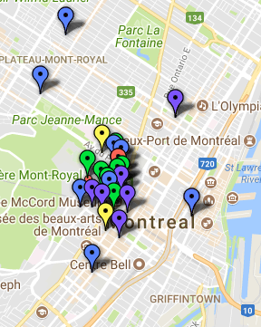

About Me
I am a fourth-year Ralph M. Barford Loran Scholar at McGill University in the Honours Economics program with minors in Computer Science and International Development Studies. Through my education and employment, I aim to bridge the gap between technology and people in both the private sector and the not-for-profit space.
In the summer of 2015, I worked at the International Institute for Sustainable Development on a community indicator system called Peg. We worked to leverage economic, environmental and social data to democratize access to information and create a more informed populace.
The following summer I travelled to El Salvador and co-founded Mareas de Tasajera, a streamlined community indicator system that brings the framework to low-income rural communities.
This summer I am working at Scotiabank in Toronto managing Academic Partnerships, facilitating transfer of knowledge between the bank and our 55+ partner institutions.
Originally from Winnipeg, I was selected as a Loran Scholar in 2014 and moved to Montreal where I continue to study at McGill.
Projects
Jacksonville MyBus
This project was developed for a class at McGill. It accesses the live bus locations in Jacksonville, Florida every 5 seconds to tell you whether or not you can make the next bus at your nearest stop. I'll likely make it a bit more useful by adding a destination feature, but the current edition was still a fun exercise.

Mareas de Tasajera
I spent the summer of 2016 in El Salvador co-founding Mareas de Tasajera, a community indicator system serving a small fishing community called Isla Tasajera. The goal of the project was to establish a system tailored to the needs of low-income rural communities while minimizing costs. We also aimed to produce a replicable model for others to utilize.

Montreal Study Space Search
Another project from school, this tool crowdsources data and reviews from students regarding their favourite (or least favourite) places to study around Montreal. It then live maps the data with the icons organized by rating. Unfortunately the Fusion Tables functionality is becoming obsolete, so I imagine the mapping will not function properly for much longer.
Peg
My summer at the International Institute for Sustainable Development was spent primarily working on Peg, an award-winning community indicator system serving Winnipeg. Through this experience I was confronted with my lack of data literacy, and it led me to pursue an education more focused on statistics and computer science. It was also this project that sparked my interest for geospatial data.